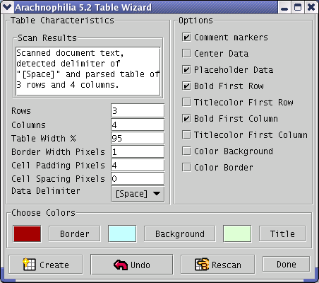

This page describes the Table Wizard and a new, more flexible way to deal with lists than existed in the previous version of Arachnophilia.
First, for the table wizard, create an HTML document and type in the highlighted section below:
1 <!DOCTYPE HTML PUBLIC "-//W3C//DTD HTML 4.01 Transitional//EN">
2
3 <!-- Created on Mar 8, 2002 6:46:26 PM -->
4
5 <html>
6 <head>
7 <title>
8 Table
9 </title>
10 <meta name="GENERATOR" content="Arachnophilia 5.0">
11 <meta name="FORMATTER" content="Arachnophilia 5.0">
12 </head>
13
14 <body bgcolor="#ffffff" text="#000000" link="#0000ff" vlink="#800080" alink="#ff0000">
15
16 one two three four
17 five six seven eight
18 nine ten eleven twelve
19
20 </body>
21 </html>
22
The section highlighted in
this color
is the part we are interested in, and we'll be focusing on this section in the example below.
-
Select the section of interest as shown above, by dragging the mouse cursor over it:
one two three four
five six seven eight
nine ten eleven twelve
- Launch the Table Wizard. In the default menu structure it is located at
HTML ... Launch Table Wizard.
You will see:

The Table Wizard examines the selected text and tries to figure out which delimiter is being used to separate the fields in your data — it usually guesses correctly. But if it doesn't, simply choose another delimiter with the "data delimiter" drop-down list and press "rescan" to make the wizard reevaluate the selected data.
- Then try pressing "Create" just to see what the wizard comes up with. Remember — you can always undo (
 ) the result and try something else. There are many options and combinations, and you should experiment with these to see what results the wizard can produce.
And remember — there are any number of sources of information in table form, separated by commas, tabs, and other characters — spreadsheets, databases, and others — and most of them can be trivially imported into Arachnophilia and turned into a table using this wizard.
) the result and try something else. There are many options and combinations, and you should experiment with these to see what results the wizard can produce.
And remember — there are any number of sources of information in table form, separated by commas, tabs, and other characters — spreadsheets, databases, and others — and most of them can be trivially imported into Arachnophilia and turned into a table using this wizard.
Here is an example of the sort of tables the Table Wizard can create with a few seconds of effort and our example data above:
|
one
|
two
|
three
|
four
|
|
five
|
six
|
seven
|
eight
|
|
nine
|
ten
|
eleven
|
twelve
|
Now for a new way of handling lists.
In the previous version of Arachnophilia, there was a list wizard similar to the table wizard, but I have since realized this arrangement was unnecessarily complicated and inflexible. So now there are two system macros that do the job:
If invoked without any arguments,
[MakeUnorderedList]
(for which there is a convenient button in the "HTML Tag Toolbars" section of the macros) will take the selection and turn it into an unordered list, like this:
Before (note the selection):
one
two
three
four
five
six
seven
eight
After:
- one
- two
- three
- four
- five
- six
- seven
- eight
But this is just the beginning! Select a subset of the list as shown below:
- one
- two
- three
- four
- five
- six
- seven
- eight
And invoke
[MakeUnorderedList]
again. Result:
Select a subset again:
Result:
This list-building method is very flexible, and remember — if you don't like the outcome, simply
"undo" it.
If you plan to have syntactically correct Web pages that have multiply-indented lists like this example, be sure to apply the Arachnophilia feature known as "ReplaceLiTags" to the final result. This feature is located in the "HTML ... More Functions" menu. This feature will automatically correct the relationship between your <ul>, <ol> and <li> tags to conform to XHTML syntax. If you don't take this step and you have multiply indented lists, because of the difficult syntax involved it's not likely that your page will pass XHTML validation.
Please note that this example is just an example. :) You can just as easily work from some small subset of a list to the outer extremes as the reverse (as in this example). That is why this new method is more useful — it makes no assumptions about the needs of the user, and it exhibits some intelligence about where to put
<li>
tags and enclosing list tags.
The macro
[MakeOrderedList],
also conveniently available in the "HTML Tag Toolbars" section of the macro tree, creates a sequential, numbered list in the same way.
Both
[MakeUnorderedList]
and
[MakeOrderedList]
accept optional arguments, ones having to do with special list styles. Here are examples:
[MakeOrderedList]
creates:
- Animal
- Vegetable
- Mineral
- Indeterminate
[MakeOrderedList:A]
creates:
- Animal
- Vegetable
- Mineral
- Indeterminate
[MakeOrderedList:a]
creates:
- Animal
- Vegetable
- Mineral
- Indeterminate
[MakeOrderedList:I]
creates:
- Animal
- Vegetable
- Mineral
- Indeterminate
[MakeOrderedList:i]
creates:
- Animal
- Vegetable
- Mineral
- Indeterminate
Now, for [MakeUnorderedList], the options are:
[MakeUnorderedList]
creates:
- Animal
- Vegetable
- Mineral
- Indeterminate
[MakeUnorderedList:disc]
creates:
- Animal
- Vegetable
- Mineral
- Indeterminate
[MakeUnorderedList:circle]
creates:
- Animal
- Vegetable
- Mineral
- Indeterminate
[MakeUnorderedList:square]
creates:
- Animal
- Vegetable
- Mineral
- Indeterminate
Obviously these unordered list examples will look different on different browsers. Most browsers use different marks for different levels in unordered lists, this is a way to override that default ordering.
All these ordered and unordered list options simply reflect the formal HTML options one can invoke directly on the
<ol>
and
<ul>
tags. It is just a convenient way to represent them in an Arachnophilia macro.